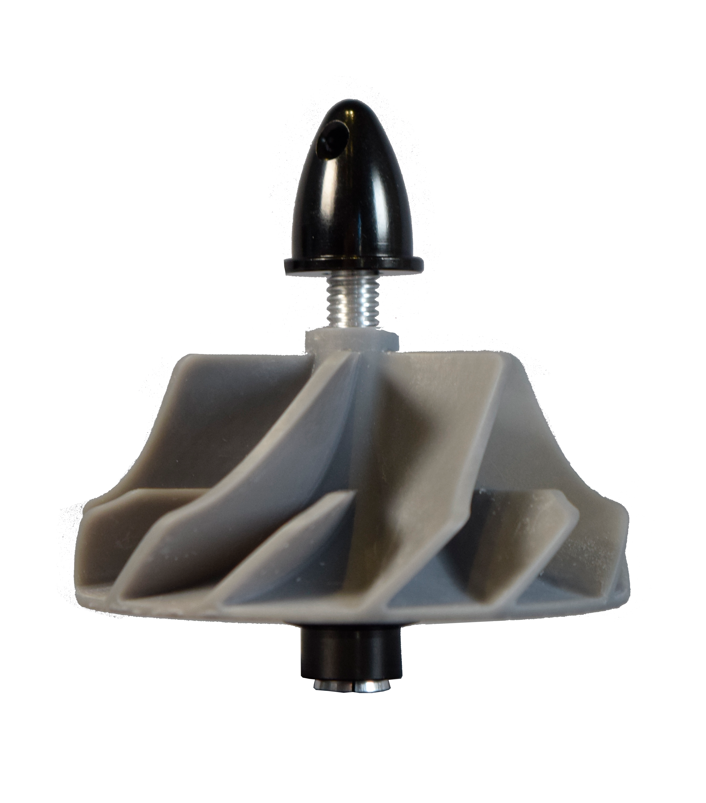

Diffuser
Micro turbojet compressor diffuser

In an ongoing project to build a micro turbojet engine, I developed a single-place dynamic vibration balancer to aid in the manufacturing of high-speed rotors.

Before building the test stand, I wrote a physics simulation to visualize the system's behavior. I relied on the model to prototype the key algorithms that I would later use for measuring and correcting the mass imbalance.
I designed and fabricated the test stand out of a combination of 3D printed and machined metal parts. This was a good opportunity to practice rapid-prototyping skills and learn how to program conversational CNC operations on the mill.During operation, the unbalanced object is spun with a brushless motor. The resulting forces cause the isolation swing to vibrate, which is measured by an accelerometer. Custom software correlates the acceleration with the rotation of the motor, characterizing the system's state of vibration with a unique phase and amplitude. By looking at the change in system response after a known change to the system inputs, the software solves for the location and quantity of mass that must be added (or removed) to balance the object.


When measuring the phase of the vibration, the machine achieved an angular accuracy of 1 degree as measured by the standard deviation. In testing, I was able to use the machine to reduce the amplitude of vibrations in the test object by 70%.
While the machine was able to achieve noteworthy balancing, there are several improvements that I hope to make in the future. Notably, the sensitivity of the cheap MEMS accelerometer set a cap on the amplitude of vibration that could be detected and ultimately limited the performance of the machine. Experimenting with different instrumentation (such as piezoelectric accelerometers or laser distance sensors) could yield better results.
Micro turbojet compressor diffuser

My contibutions on the Olin Electric Motorsport formula SAE team

A full-featured avionics suit developed for high-power model rockets